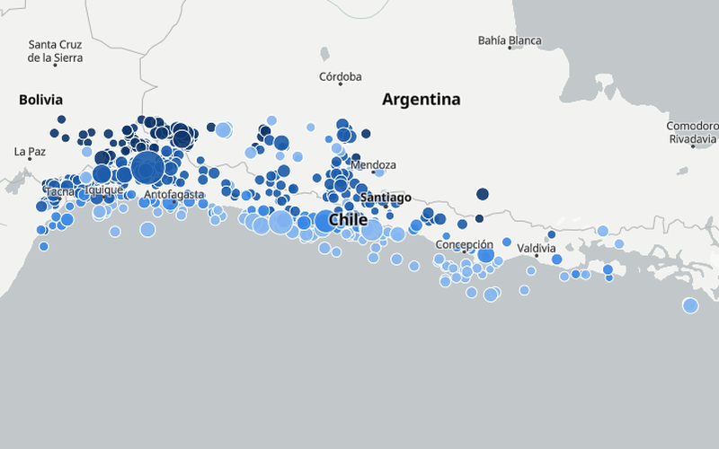

Mapa animado · Gráfico enlazadoAnimated map · Linked chart
Un año de sismos en Chile y alrededoresA year of earthquakes in and around Chile
799 sismos de magnitud 3 o más que aparecen en el tiempo, coloreados por profundidad y conectados a un gráfico semanal. 799 magnitude 3+ earthquakes appearing over time, colored by depth and linked to a weekly chart.
- MapLibre
- Chart.js
- GeoJSON